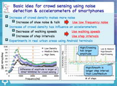
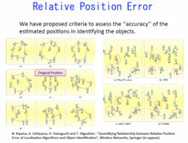

Crowd Sensing
Congestion Estimation using Smartphones
We are studying a method to recognize the congestion situation of indoor space in real time by participatory sensing. We developed a data fusion algorithm that properly combines the information obtained from acceleration sensors of smartphones and microphones according to their respective characteristics, and developed a method to automatically and highly accurately judge the congestion situation of stations and underground shopping malls. In the proposed method, the reliability is given to the information obtained from each mobile terminal, thereby reducing the influence of individual retention methods and individual differences in walking behaviors. Also, based on the strength of the received signal of the smartphone's Bluetooth, we have devised a method to estimate the degree of congestion in the train and the number of car riding with high precision.

{kind=link}
{kind=link}
People Centric Navigation
It is not easy to find out acquaintances who are meeting in the crowds of stations and malls. Under such circumstances, in order to support communication between people, such as guiding users to the place where acquaintance is located through mobile terminals, a mechanism is needed to accurately grasp the positional relationship with the surrounding people. In this research, we propose PCN (People Centric Navigation), a method for recognizing and navigating the relative position relation with the surrounding people using only smartphone sensing. In the proposed method, the walking locus of the user is estimated from measured values of the acceleration sensor and electronic compass by Pedestrian Dead Reckoning (PDR), encounters between users are detected based on the received radio signal strength of Bluetooth, and walking by superimposing the trajectory at the encounter point, the relative positional relation between the users is estimated. At this time, we try to reduce the position estimation error by utilizing the behavior characteristics of the user group taking similar behavior.
Relative Position Error
We have proposed criteria to assess the ‘‘accuracy’’ of the estimated positions in identifying the objects. The criteria are helpful to design, develop and evaluate localization algorithms that are used to tell people the location of objects. Augmented reality is a typical example that needs such localization algorithms. To model the criteria without ambiguity, we prove that the Delaunay triangulation well captures natural human behavior of finding similarity between estimated and true positions. We have examined different localization algorithms to observe how the proposed model quantifies the properties of those algorithms. Subjective testing has also been conducted using questionnaires to justify our quantification sufficiently renders
human intuition.

{kind=link}
[Selected Publications]
M. Elhamshary, M. Youssef, A. Uchiyama, H. Yamaguchi and T. Higashino: "TransitLabel: A Crowd-Sensing System for Automatic Labeling of Transit Stations Semantics", Proceedings of 14th Annual International Conference on Mobile Systems, Applications, and Services (MobiSys 2016), pp.193-206, 2016.
T. Higuchi, H. Yamaguchi and T. Higashino: "Trajectory Identification based on Spatio-temporal Proximity Patterns between Mobile Phones", Wireless Networks, Vol.22, No.2, pp.563-577, 2016.
T. Higuchi, H. Yamaguchi and T. Higashino: "Mobile Devices as an Infrastructure: A Survey of Opportunistic Sensing Technology", Journal of Information Processing (JIP), Vol.23, No.2, pp.94-104, 2015. (Invited Paper)
T. Satoh, A. Hiromori, H. Yamaguchi and T. Higashino: "A novel estimation method of road condition for pedestrian navigation", Proceedings of the 2015 IEEE International Conference on Pervasive Computing and Communication Workshops (PerCom Workshops 2015), pp.427-432, 2015.
T. Higuchi, H. Yamaguchi and T. Higashino: "Tracking Motion Context of Railway Passengers by Fusion of Low-power Sensors in Mobile Devices", Proceedings of 2015 ACM International Symposium on Wearable Computers (ISWC 2015), pp.163-170, 2015.
Y. Maekawa, A. Uchiyama, H. Yamaguchi and T. Higashino: "Car-level Congestion and Position Estimation for Railway Trips using Mobile Phones", Proceedings of 2014 ACM Conference on Ubiquitous Computing (UbiComp 2014), pp.939-950, 2014.
T. Nishimura, T. Higuchi, H. Yamaguchi and T. Higashino: "Detecting Smoothness of Pedestrian Flows by Participatory Sensing with Mobile Phones", Proceedings of 2014 ACM International Symposium on Wearable Computers (ISWC 2014), pp.15-18, 2014.
T. Higuchi, S. Fujii, H. Yamaguchi and T. Higashino : "Context-Supported Local Crowd Mapping via Collaborative Sensing with Mobile Phones", Pervasive and Mobile Computing (Elsevier), Vol.13, pp.26-51, 2014.
T. Higuchi, H. Yamaguchi and T. Higashino : "Mobile Node Localization Focusing on Stop-and-Go Behavior of Indoor Pedestrians", IEEE Transactions on Mobile Computing, Vol.13, No.7, pp.1564-1578, 2014.
A. Uchiyama, S. Fujii, K. Maeda, T. Umedu, H. Yamaguchi, and T. Higashino : "UPL: Opportunistic Localization in Urban Districts", IEEE Transactions on Mobile Computing, Vol.12, No.5,pp.1009-1022, 2013.
N. Kiyama, A. Uchiyama, H. Yamaguchi and T. Higashino : "Quantifying Relationship between Relative Position Error of Localization Algorithms and Object Identification", Wireless Networks (Springer), Vol. 19, No. 6, pp.1037-1049, 2013.
T. Higuchi, H. Yamaguchi, and T. Higashino : "Clearing a Crowd: Context-Supported Neighbor Positioning for People-Centric Navigation"，Proc. of 10th Int. Conf. on Pervasive Computing (Pervasive 2012), pp.325-342, 2012.
S. Fujii, A. Uchiyama, T. Umedu, H. Yamaguchi and T. Higashino : "Trajectory Estimation Algorithm for Mobile Nodes Using Encounter Information and Geographical Information", Pervasive and Mobile Computing, Vol.8, No.2, pp.249-270, 2012.
T. Higuchi, S. Fujii, H. Yamaguchi and T. Higashino : "An Efficient Localization Algorithm Focusing on Stop-and-Go Behavior of Mobile Nodes", Proc. of 9th Annual IEEE Int. Conf. on Pervasive Computing and Communications (PerCom2011), pp.205-212, 2011.
{kind=link}
A. Uchiyama, S. Fujii, K. Maeda, T. Umedu, H. Yamaguchi, and T. Higashino : "UPL: Opportunistic Localization in Urban Districts", IEEE Transactions on Mobile Computing, May 2013. (to appear) pdf
(Abstract) We propose an opportunistic ad hoc localization algorithm called Urban Pedestrians Localization (UPL), for estimating locations of mobile nodes in urban districts. The design principles of UPL are twofold. First, we assume that location landmarks are deployed sparsely due to deployment-cost constraints. Thus, most mobile nodes cannot expect to meet these location landmarks frequently. Each mobile node in UPL relies on location information received from its neighboring mobile nodes instead in order to estimate its area of presence in which the node is expected to exist. Although the area of presence of each mobile node becomes inexact as it moves, it can be used to reduce the areas of presence of the others. Second, we employ information about obstacles such as walls, and present an algorithm to calculate the movable areas of mobile nodes considering obstacles for predicting the area of presence of mobile nodes accurately under mobility. This also helps to reduce each node’s area of presence.